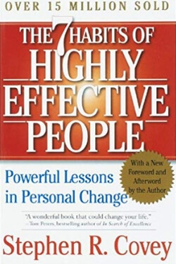

Library › Self-Improvement
The 7 Habits of Highly Effective People — Summary & Key Lessons

The character-first classic: private victory, public victory, and the discipline of sharpening the saw.
📖 OPEN THE FULL INTERACTIVE BREAKDOWN →🌐 Read it in Hindi, Hinglish, Gujarati, Tamil & 22 more languages — free, with audio.
💡 The Big Idea
Covey's research into 200 years of success literature found a shift: early writings focused on character (integrity, humility, courage); modern ones on personality tricks (techniques, image, quick fixes). His framework restores the deeper path — an inside-out progression: Habits 1–3 build the Private Victory (self-mastery: proactivity, vision, priorities), Habits 4–6 the Public Victory (win-win, empathic listening, synergy), and Habit 7 renews the whole system. True effectiveness balances P/PC: production AND the capacity to produce — never kill the goose that lays the golden eggs.
🧠 The 7 Key Lessons
Lesson 1: Habit 1: Be Proactive
Habit 1
Proactivity means your behavior is a function of your decisions, not your conditions. Between stimulus and response lies a space, and in that space lives your freedom to choose. Reactive people are driven by weather, moods, and other people's treatment of them; their language betrays it ('I can't,' 'he makes me so angry,' 'I have to'). Proactive people work within their Circle of Influence — the things they can actually affect — and by focusing there, the circle grows. Reactive people fixate on the Circle of Concern (things they can't control), and their influence shrinks accordingly.
📖 Example: Viktor Frankl in the Nazi camps: stripped of everything, he discovered the last human freedom — to choose one's response. Covey builds the entire habit on this. Corporate version: two managers hit the same recession; one catalogs grievances about the market,… Read the full example →
⚡ Do this: For one week, catch and convert reactive language: 'I have to' → 'I choose to,' 'he makes me angry' → 'I'm allowing anger.' List your worries in two circles — work only the inner one.
Lesson 2: Habit 2: Begin With the End in Mind
Habit 2
Everything is created twice: first mentally, then physically. If you don't design your life's blueprint deliberately, you live by default — climbing the ladder of success only to discover it's leaning against the wrong wall. Covey's tool is the personal mission statement: a written constitution defining who you want to be (character) and what you want to do (contributions), based on principles that don't change. Center your life on principles — not spouse, money, work, possessions, or self — because every other center wobbles when circumstances hit it.
📖 Example: Covey's funeral visualization: imagine attending your own funeral and hearing four speakers — family, a friend, a colleague, someone from your community. What do you WANT them to say? The gap between that answer and your current calendar is the agenda for… Read the full example →
⚡ Do this: Draft your mission statement this week — one page: who you're becoming, what you contribute, on what principles. Review it every Sunday and let it veto your schedule.
Lesson 3: Habit 3: Put First Things First
Habit 3
Habit 3 is the second creation: living the mission daily. Covey's matrix sorts tasks by urgent/important. Quadrant I (urgent+important: crises) must be done; Quadrant III (urgent, not important: most interruptions) masquerades as I; Quadrant IV (neither: escapism) is waste. The transformative zone is Quadrant II — important, not urgent: planning, relationship-building, prevention, exercise, learning. Effective people schedule Q2 FIRST (weekly, not daily, planning — big rocks before gravel) and say a cheerful, unapologetic no to much of III and IV. You don't prioritize your schedule; you schedule your priorities.
📖 Example: The big rocks demonstration: fill a jar with gravel first and the big rocks never fit; place big rocks first and the gravel settles around them. Every over-busy professional lives the first jar. Covey's challenge to a group of executives — identify one Q2… Read the full example →
⚡ Do this: Every Sunday: identify your 3–5 big rocks for the week (mostly Q2) and calendar them before anything else. Track how much of your week actually goes to each quadrant.
Lesson 4: The Emotional Bank Account & Habit 4: Think Win/Win
Paradigms of Interdependence / Habit 4
Every relationship runs an emotional bank account: deposits (kindness, kept promises, loyalty to the absent, apologies) build trust; withdrawals (discourtesy, betrayal, ignoring) drain it. All public-victory habits require a funded account. Habit 4, Win/Win, is a frame of mind seeking mutual benefit in every interaction — rooted in the abundance mentality (there's plenty for everyone) versus the scarcity mentality (your win is my loss). Where win/win truly isn't available, the mature move is Win/Win or No Deal: walk away rather than poison the relationship with a win/lose outcome either direction.
📖 Example: Covey's story of the father 'winning' every negotiation with his son — until the son, now grown, wants nothing to do with him: decades of win/lose transactions, one bankrupt account. Business version: a supplier squeezed to the bone (win/lose) delivers… Read the full example →
⚡ Do this: Pick your most strained relationship. Make five deliberate deposits over two weeks (kept promise, sincere apology, defending them in their absence). In your next negotiation, state both parties' wins out loud before proposing terms.
Lesson 5: Habit 5: Seek First to Understand, Then to Be Understood
Habit 5
Most people listen with intent to reply, not to understand — autobiographically filtering everything through their own story, prescribing before diagnosing. Empathic listening means entering the other person's frame until you can articulate their view and their FEELINGS to their satisfaction — which is not agreement, but the deepest deposit available: psychological air. Only after a person feels understood do they become capable of hearing you. Then the second half: present your view clearly and in the context of theirs (ethos, pathos, logos — in that order). Diagnose before you prescribe; it's the mark of every true professional.
📖 Example: Covey's optometrist parable: you say you're struggling to see; he hands you HIS glasses — 'they work great for me; try harder.' Absurd in medicine, standard in conversation: parents, managers, and spouses prescribing their glasses daily. Contrast: a father… Read the full example →
⚡ Do this: In your next three important conversations, don't state your view until you've reflected theirs back ('So you feel X because Y?') and they've said 'exactly.' Watch what it unlocks.
Lesson 6: Habit 6: Synergize
Habit 6
Synergy — the habit of creative cooperation — means the whole exceeds the sum of parts: 1+1 = 3 or more. Its essence is valuing differences: two people who see differently, BOTH right from their paradigms, can produce a third alternative better than either original position — but only with high trust (Habits 4–5 as prerequisites). Low-trust interactions produce defensiveness (win/lose); middle-trust produces respectful compromise (1+1 = 1.5); high trust produces synergy. The insecure surround themselves with sameness and clone-hire; the effective seek out the person who sees what they're missing.
📖 Example: Nature's version: two plants grown close, roots intermingled, outgrow the sum of what each grows alone; two boards nailed together hold far more than twice one board. Covey's human case: a couple deadlocked between a fishing vacation (his dream) and visiting… Read the full example →
⚡ Do this: Take a current disagreement and say: 'Let's look for a third alternative neither of us has proposed — better than both.' Invite the most different-thinking colleague into your next big decision.
Lesson 7: Habit 7: Sharpen the Saw
Habit 7
A woodcutter saws for days, blade dulling, production falling — too busy sawing to sharpen the saw. Habit 7 is scheduled renewal in four dimensions: Physical (exercise, nutrition, rest), Mental (reading, writing, planning), Social/Emotional (service, empathy, meaningful connection), and Spiritual (values clarification, meditation, nature — whatever renews your core). This is the ultimate Q2 activity: it makes every other habit possible, preserves your greatest asset (you), and drives the upward spiral of learn-commit-do. Neglect any dimension and all four eventually pay; renew daily and capacity compounds for decades.
📖 Example: Covey's math: one hour a day of renewal — the 'daily private victory' — seems unaffordable to the busy, yet its absence guarantees the dulling of everything else: the executive too busy for exercise who buys the heart attack; the manager too busy for reading… Read the full example →
⚡ Do this: Design your daily hour: 30 min physical, 15 mental, 15 spiritual — plus deliberate emotional deposits inside existing interactions. Schedule it like a client meeting for 30 days.
✅ 5-Step Action Plan
- Work only your Circle of Influence for a week — convert reactive language.
- Write the one-page mission statement; let it veto your calendar.
- Plan weekly: big rocks (Q2) scheduled before all gravel.
- Make five deposits in your most strained relationship; listen until 'exactly.'
- Protect the daily renewal hour for 30 consecutive days.
⚠️ When This Doesn't Work
The 7 Habits are character on paper — the danger is when they become a poster on the wall. Enron had values plaques, integrity workshops and a famous 'RICE' code, and still ran the largest fraud of its era, because the incentives and the culture said the opposite of the posters. Habits live in what you reward, not what you print. If your team's actual incentives contradict habit 4, the habit will lose every time.
💀 The Graveyard Proves It
⚡ Enron — The Smartest Guys in the Room. Burn: $74B shareholder value, 20,000 jobs. Read the full case study →
💬 Best Quotes from The 7 Habits of Highly Effective People
- “Between stimulus and response there is a space. In that space is our power to choose.”
- “Begin with the end in mind.”
- “Seek first to understand, then to be understood.”
Interactive version: mark lessons as read, listen in your language, share quote cards.